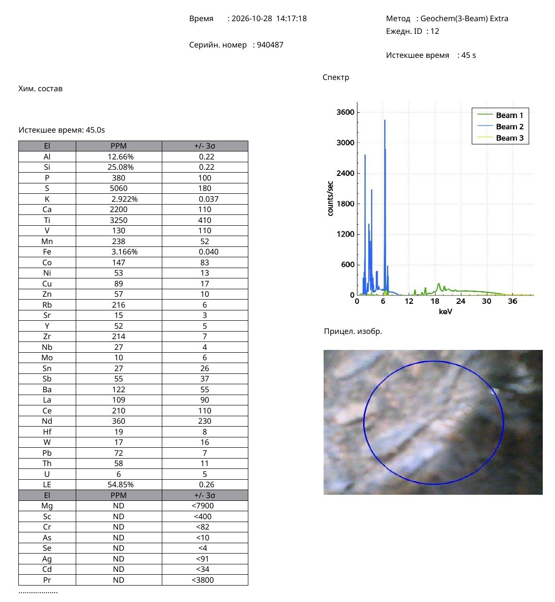

Research Article · Reference Object ro-song-016
Iron-Rich Hare’s-Fur Glaze on a Song-Dynasty Jian Tea Bowl: Comparative Portable X-Ray Fluorescence Analysis of the Brown and Black Glaze Areas and the Ceramic Body
Nona Dronova — Independent Researcher — Zenodo, published 30 October 2026 (v1) — Research Article · Chinese Ceramic Archaeometry · Glaze Technology
Abstract
This article presents a comparative archaeometric study of a Chinese Jian-type tea bowl of the Song dynasty, distinguished by a characteristic iron-rich hare’s-fur glaze (tuhao, 兔毫). The vessel has a warm brown exterior, a dark interior, and fine blue-black to greenish-black radial streaks extending from the central well towards the upper walls.
Three areas of the bowl were examined by portable X-ray fluorescence spectroscopy (pXRF): the brown glaze, the black glaze, and the unglazed ceramic base. The measurements recorded elemental iron concentrations of 4.134 wt%, 3.692 wt%, and 3.166 wt%, respectively. The corresponding theoretical Fe₂O₃ equivalents are 5.91 wt%, 5.28 wt%, and 4.53 wt%.
The brown glaze is enriched in iron relative to the black glaze, whereas the black glaze contains more silicon. Calcium is strongly concentrated in the glazed areas, reaching 4.180–4.319 wt%, compared with only 0.220 wt% in the unglazed ceramic body.
The results are compared with published studies of the composition and microstructure of historical Jian hare’s-fur glazes. Of particular significance is the correspondence with research demonstrating iron enrichment in brown-yellow streaks and relatively higher silicon concentrations in the adjacent black glaze.
Together, the elemental and photographic data provide a detailed characterisation of the bowl’s iron-rich glaze and make an original comparative contribution to the study of Chinese high-temperature tea ceramics.
Keywords: Jian ware; Song dynasty; tenmoku; hare’s-fur glaze; tuhao; iron-rich glaze; tea bowl; pXRF; Fe₂O₃; calcium-rich glaze; ceramic archaeometry; Chinese ceramics.
1. Introduction
Black-glazed tea bowls produced at the Jian kilns in Fujian Province occupy a prominent place in the history of Chinese ceramic technology and tea culture.
During the Song dynasty (960–1279), Jian tea bowls were especially valued for their dark glaze, which created a visual contrast with the pale froth produced by the contemporary method of whisking tea.
Among the best-known Jian glaze effects is “hare’s fur” (tuhao, 兔毫), characterised by fine, elongated streaks running down the glazed inner surface of the vessel.
These streaks result from complex high-temperature processes involving iron-rich glaze compositions, melt flow, phase separation, and crystallisation during firing and cooling.
Modern archaeometric studies have identified crystalline iron-oxide phases, including ε-Fe₂O₃, in historical Jian glazes. These studies show that the characteristic hare’s-fur appearance reflects complex interactions between glaze chemistry, firing atmosphere, and cooling.
The present article examines a Song-dynasty Jian tea bowl with a characteristic radial hare’s-fur pattern.
The study combines three portable X-ray fluorescence measurements with photographic documentation of the vessel’s glaze and ceramic body.
The principal aim is to compare the elemental composition of the brown glaze, the black glaze, and the unglazed base, and to relate the results to the existing scientific literature on Jian ceramic technology.
2. Description of the Investigated Tea Bowl
The investigated object is a Chinese Jian-type tea bowl belonging to the Song-dynasty tradition of iron-rich black-glazed ceramics.
The bowl has a wide, smoothly flaring profile, a slightly everted rim, and a comparatively small circular foot.
Its surface is covered with a warm reddish-brown glaze that gradually darkens towards the lower body.
Near the foot the glaze acquires a deep blue-black tone, while the lower part of the base remains unglazed.
The interior displays a striking radial pattern.
Fine dark blue-black and greenish-black streaks radiate outward and upward from the central well over a warm brown ground.
The streaks vary in width, length, and density, creating the characteristic visual effect traditionally described as hare’s fur.
A dark, glossy pool of glaze has accumulated in the central well.
Under magnification, numerous small rounded dark features can be seen within the glaze.
These characteristics provide the visual and morphological context for the elemental analysis.
3. Materials and Methods
3.1. Portable X-ray fluorescence analysis
The elemental composition of the bowl was examined by portable X-ray fluorescence spectroscopy.
The measurements were carried out on 28 October 2026 using the instrument with serial number 940487.
The Geochem (3-Beam) Extra analytical program was used, with an acquisition time of 45 seconds per measurement.
The investigated vessel was designated Sample No. 6.
Three successive measurements were performed:
- Measurement No. 10: brown glaze (tarelka korich).
- Measurement No. 11: black glaze (tarelka cher).
- Measurement No. 12: unglazed ceramic base (tarelka niz).
These measurements were selected to characterise the chemical differences between the two glazed areas and the exposed ceramic body.
3.2. Optical documentation
Four photographs were used to document the bowl:
- A magnified image of the radial hare’s-fur pattern.
- A magnified image of the glaze surface showing rounded dark features.
- A general view of the interior and its radial decoration.
- A side view showing the vessel profile, exterior glaze, and unglazed base.
The photographs provide direct visual evidence of the glaze distribution, decorative pattern, and surface morphology of the bowl.
3.3. Conversion of elements to oxides
For comparison with published ceramic compositions, selected elemental concentrations were converted into theoretical oxide equivalents using standard stoichiometric factors:
- Fe × 1.4297 = Fe₂O₃ equivalent.
- Si × 2.1393 = SiO₂ equivalent.
- Al × 1.8895 = Al₂O₃ equivalent.
- Ca × 1.3992 = CaO equivalent.
- K × 1.2046 = K₂O equivalent.
These conversions express the measured elemental concentrations in the conventional ceramic oxide format.
4. Experimental Results
4.1. Elemental composition of the three areas
Table 1. Comparative pXRF measurements of the Song-dynasty Jian tea bowl (Sample No. 6).
| Element | Brown glaze, No. 10 | Black glaze, No. 11 | Unglazed base, No. 12 |
|---|---|---|---|
| Si (wt%) | 30.14 | 34.31 | 25.08 |
| Al (wt%) | 7.89 | 8.10 | 12.66 |
| K (wt%) | 3.899 | 4.360 | 2.922 |
| Ca (wt%) | 4.180 | 4.319 | 0.220 |
| Fe (wt%) | 4.134 | 3.692 | 3.166 |
| Ti (ppm) | 3030 | 3010 | 3250 |
| Mn (ppm) | 311 | 268 | 238 |
| Co (ppm) | 212 | 193 | 147 |
| Cu (ppm) | 64 | 72 | 89 |
| Zn (ppm) | 96 | 97 | 57 |
| As (ppm) | 24 | 20 | ND, <10 |
| Pb (ppm) | 47 | 47 | 72 |
| S (ppm) | 3710 | 3840 | 5060 |
Source: original portable X-ray fluorescence report, instrument No. 940487, 28 October 2026, Sample No. 6, measurements 10–12. ND denotes a value below the reported detection limit.
4.2. Iron distribution
Iron is a major constituent of all three examined areas.
The brown glaze contains 4.134 wt% Fe, the black glaze 3.692 wt% Fe, and the unglazed ceramic base 3.166 wt% Fe.
The brown glaze therefore contains approximately 12.0% more elemental iron than the black glaze, relative to the iron content of the black glaze.
The absolute difference is 0.442 percentage points.
The brown glaze also contains approximately 30.6% more iron than the unglazed base.
The black glaze contains approximately 16.6% more iron than the unglazed base.
These measurements establish a systematic variation of iron concentration across the three analysed areas.
Original pXRF Protocols — Olympus analyser, 28 October 2026

Measurement No. 12, unglazed ceramic base. Click to open full size.
4.3. Theoretical iron-oxide equivalents
Table 2. Elemental iron content and theoretical Fe₂O₃ equivalent.
| Area | Fe (wt%) | Fe₂O₃ equivalent (wt%) |
|---|---|---|
| Brown glaze | 4.134 | 5.91 |
| Black glaze | 3.692 | 5.28 |
| Unglazed base | 3.166 | 4.53 |
The calculated Fe₂O₃ equivalents lie within the range relevant to the study of historical iron-rich Chinese ceramic glazes.
The brown glaze has the highest measured iron concentration, although it is lighter than the black glaze.
This result is of particular importance for understanding the coloration of Jian ware.
It demonstrates that visual darkness does not simply correspond to total elemental iron concentration.
The appearance of the glaze also depends on iron-bearing phases, local chemistry, optical absorption, microstructure, and firing history.
4.4. Calcium enrichment of the glaze
The calcium concentrations reveal a particularly pronounced difference between the glazed areas and the ceramic body.
The brown glaze contains 4.180 wt% Ca.
The black glaze contains 4.319 wt% Ca.
The unglazed base contains only 0.220 wt% Ca.
The brown glaze is therefore approximately 19 times richer in calcium than the unglazed ceramic base.
The black glaze is approximately 19.6 times richer in calcium than the base.
This substantial difference indicates that calcium is an important component of the glaze recipe.
The result is consistent with the use of calcium-bearing fluxes in traditional Chinese high-temperature ceramic glazes.
4.5. Distribution of silicon and aluminium
The black glaze contains 34.31 wt% Si, compared with 30.14 wt% Si in the brown glaze.
The black glaze is therefore relatively enriched in silicon.
The aluminium concentration is approximately the same in both glazed areas:
- Brown glaze: 7.89 wt% Al.
- Black glaze: 8.10 wt% Al.
The unglazed ceramic body contains considerably more aluminium, reaching 12.66 wt% Al.
These differences distinguish the aluminosilicate ceramic body from the calcium-rich glaze system.
4.6. Comparative oxide equivalents
Table 3. Selected theoretical oxide equivalents calculated from the pXRF elemental concentrations.
| Oxide equivalent | Brown glaze (wt%) | Black glaze (wt%) | Unglazed base (wt%) |
|---|---|---|---|
| SiO₂ | 64.48 | 73.40 | 53.65 |
| Al₂O₃ | 14.91 | 15.30 | 23.92 |
| Fe₂O₃ | 5.91 | 5.28 | 4.53 |
| CaO | 5.85 | 6.04 | 0.31 |
| K₂O | 4.70 | 5.25 | 3.52 |
The values given are theoretical oxide equivalents calculated from the measured elemental concentrations; they do not represent independently measured mineral phases or a normalised bulk oxide composition.
The table shows the chemical difference between the calcium-rich glazed areas and the aluminium-rich ceramic body.
5. Optical and Morphological Observations
5.1. The radial hare’s-fur pattern
Numerous fine radial streaks are visible inside the bowl, extending from the central well towards the upper wall.
The streaks are dark blue-black or greenish-black and lie on a warm brown ground.
Their density is greatest around the central well.
Individual streaks vary in length and thickness.
Some remain narrow and sharply defined, while others merge into broader dark areas.
The resulting pattern is characteristic of the decorative phenomenon known as hare’s fur.
5.2. Glaze pooling in the central well
A dark, glossy accumulation of glaze lies in the central well.
A circular boundary is visible around the central area, separating the darker zone from the surrounding radial streaks.
This feature provides an important visual record of the relationship between glaze flow, local thickness, and the development of the decorative pattern.
5.3. Rounded surface features
The magnified photograph shows numerous small rounded dark features distributed across the glaze surface.
Some appear as isolated dots, while others form irregular clusters.
The photograph also shows local variation in transparency, colour intensity, and surface texture.
These features are relevant to the study of phase separation and gas-related phenomena in high-temperature glazes.
5.4. Exterior glaze and unglazed foot
The side view shows the flaring profile of the bowl and its comparatively small foot.
The exterior surface is covered with a warm brown glaze that gradually darkens towards the lower body.
The boundary between the dark blue-black glaze and the exposed part of the foot runs above the base.
The base remains unglazed, providing direct access to the ceramic body for the third pXRF measurement.
6. Comparison with Published Archaeometric Studies
6.1. Microstructure of hare’s-fur glaze
Particular attention in the present study is given to Tao et al. (2022), Microstructural and compositional study of ε-Fe₂O₃ crystals in Jian hare’s-fur ware.
The authors examined historical Jian wares using complementary analytical techniques, including X-ray fluorescence, electron microscopy, Raman spectroscopy, X-ray diffraction, and synchrotron-based methods.
The study identified iron-rich crystalline structures associated with the characteristic streaked hare’s-fur glaze.
Importantly, the authors documented compositional differences between the brown-yellow streaks and the adjacent black glaze.
The brown-yellow areas were enriched in iron, whereas the black glaze contained relatively more silicon.
The bowl presented here shows the same directional relationship.
Table 4. Comparison of elemental trends in the investigated bowl and in published Jian ware samples.
| Compositional feature | This bowl | Published Jian hare’s-fur study |
|---|---|---|
| Iron in the brown area | Higher | Higher in brown-yellow streaks |
| Iron in the black area | Lower | Lower in the adjacent black glaze |
| Silicon in the brown area | Lower | Lower |
| Silicon in the black area | Higher | Higher |
| Calcium-bearing glaze | Present | Present |
| Iron-related radial decoration | Present | Present |
This correspondence is one of the most significant results of the present study.
6.2. Quantitative comparison with Tao et al. (2022)
The published oxide compositions of the Jian ware examined by Tao and colleagues provide a useful reference for the pXRF results of the present study.
Table 5. Comparison with published Jian hare’s-fur glaze compositions.
| Oxide | This bowl: brown | This bowl: black | Tao et al.: brown-yellow | Tao et al.: black |
|---|---|---|---|---|
| Fe₂O₃ (wt%) | 5.91 | 5.28 | 8.35 | 4.10 |
| CaO (wt%) | 5.85 | 6.04 | 6.97 | 3.85 |
| SiO₂ (wt%) | 64.48 | 73.40 | 62.20 | 77.07 |
| Al₂O₃ (wt%) | 14.91 | 15.30 | 16.43 | 10.61 |
Values for this bowl are oxide equivalents calculated from elemental pXRF analysis. Comparative published values for the examined Jian glaze areas are given in Tao et al. (2022).
The comparison demonstrates several important relationships.
First, both studies show a higher iron concentration in the brown or brown-yellow area than in the black glaze.
Second, both studies show a higher silicon concentration in the black glaze.
Third, the silica and calcium contents of this bowl are comparable in magnitude to the published Jian glaze compositions.
These relationships allow the bowl to be considered within the technological tradition of iron-rich Jian hare’s-fur glazes.
6.3. ε-Fe₂O₃ in historical Jian ware
A study published in Scientific Reports in 2014 identified the rare iron-oxide polymorph ε-Fe₂O₃ in ancient Jian ware.
This discovery demonstrated that historical ceramic firing technology could produce complex crystalline iron-oxide structures under particular high-temperature conditions.
Subsequent studies further examined the morphology, composition, and growth of the iron-bearing crystals associated with Jian glaze decoration.
The characteristic streaks on the present bowl are considered within this established model of iron-rich glaze crystallisation.
6.4. Experimental reconstruction of hare’s-fur glazes
A 2024 study published in the Journal of the European Ceramic Society examined the manufacturing technology of historical hare’s-fur glazed bowls.
The authors combined analytical investigation with experimental firing and simulation.
Their results emphasised the importance of iron concentration, glaze chemistry, firing atmosphere, and controlled cooling for the formation of the decorative streaks.
The reported iron-oxide concentrations are comparable in magnitude to the theoretical Fe₂O₃ equivalents calculated for the present bowl.
6.5. The role of calcium and aluminium
The calcium enrichment measured in this bowl is of considerable technological significance.
Calcium-bearing fluxes influence the melting behaviour, viscosity, and crystallisation processes of high-temperature ceramic glazes.
Aluminium content affects the structural properties of the silicate melt.
Recent studies of iron-rich Chinese glazes have further demonstrated the potential role of aluminium in stabilising particular crystalline iron-oxide structures.
The combined presence of iron, calcium, silicon, and aluminium therefore provides an important chemical basis for understanding the observed glaze effects.
7. Discussion
The three pXRF measurements show that the investigated Jian tea bowl has a chemically differentiated, iron-rich glaze system.
The brown glaze contains the highest concentration of elemental iron, 4.134 wt%.
The black glaze contains 3.692 wt% iron.
The unglazed ceramic base contains 3.166 wt% iron.
The brown glaze therefore contains more iron than the black glaze.
This relationship is particularly important because it corresponds to published observations of historical Jian hare’s-fur ware, in which brown-yellow streaks can show greater iron enrichment than the adjacent black glaze.
The silicon distribution shows the opposite trend.
The black glaze contains 34.31 wt% silicon, compared with 30.14 wt% in the brown glaze.
This inverse relationship between iron and silicon is consistent with compositional differentiation during the formation of decorative iron-rich glazes.
Calcium concentration is the second important result of the study.
Both glazed areas contain approximately 4.2–4.3 wt% calcium, whereas the unglazed ceramic base contains only 0.220 wt%.
The approximately nineteen- to twentyfold calcium enrichment of the glaze demonstrates a substantial difference between the glaze composition and the ceramic body.
The photographic characteristics of the bowl complement these analytical results.
The interior shows dense, elongated radial streaks resembling hare’s fur.
A dark layer of glaze has pooled in the central well, and the exterior shows a transition from brown to black towards the foot.
These visual features correspond to the behaviour of iron-bearing ceramic glazes at high temperatures as described in the scientific literature.
The present study is of particular value because it documents the chemical composition of three distinct technological areas of the same object using the same analytical instrument and acquisition conditions.
The resulting dataset allows a direct comparison of the brown glaze, the black glaze, and the ceramic body.
8. Conclusions
This study presents original portable X-ray fluorescence data and photographic documentation of a Song-dynasty Jian-type tea bowl decorated with an iron-rich hare’s-fur glaze.
The principal findings are as follows:
- The brown glaze contains 4.134 wt% Fe, corresponding to a theoretical Fe₂O₃ equivalent of 5.91 wt%.
- The black glaze contains 3.692 wt% Fe, corresponding to a theoretical Fe₂O₃ equivalent of 5.28 wt%.
- The unglazed ceramic base contains 3.166 wt% Fe, corresponding to a theoretical Fe₂O₃ equivalent of 4.53 wt%.
- The brown glaze contains approximately 12% more elemental iron than the black glaze.
- The black glaze is relatively enriched in silicon compared with the brown glaze.
- The glaze is markedly enriched in calcium, at a concentration approximately 19–20 times higher than in the unglazed ceramic body.
- The bowl shows characteristic radial streaks resembling hare’s fur, accompanied by a dark pool of glaze in the centre and a transition from brown to black glaze on the exterior.
The distribution of elements corresponds closely to published archaeometric observations of historical Jian hare’s-fur glazes, in particular the iron enrichment of brown-yellow areas and the silicon enrichment of the adjacent black glaze.
The combined analytical and photographic results provide original data for the study of high-temperature iron-rich glaze technology in Chinese tea ceramics.
This study demonstrates the value of comparative X-ray fluorescence analysis for characterising compositional relationships between decorative glaze areas and the underlying ceramic body.
Figure Captions
Figure 1. Song-dynasty Jian tea bowl, interior view, showing the radial hare’s-fur glaze pattern extending from the central well to the rim.
Figure 2. Magnified image of the interior glaze, showing dense blue-black and greenish-black radial streaks on a brown ground.
Figure 3. Magnified detail of the surface, showing rounded dark features and variations in glaze texture.
Figure 4. Side view of the bowl, showing the flaring profile, brown exterior glaze, dark lower glaze transition, and exposed unglazed base.
Figure 5. Comparative iron concentrations in the brown glaze, black glaze, and unglazed ceramic base.
Figure 6. Comparative calcium concentrations, showing the substantial calcium enrichment of the glazed areas relative to the ceramic body.
References
Tao et al. (2022). Microstructural and compositional study of ε-Fe₂O₃ crystals in Jian hare’s-fur ware. Crystals, 12(3), 367. https://doi.org/10.3390/cryst12030367
Lessons from the past: rare ε-Fe₂O₃ in the ancient black-glazed Jian (Tenmoku) wares. (2014). Scientific Reports. https://www.nature.com/articles/srep04941
Millimetre-scale flower-like aggregates composed of mullite and ε-Fe₂O₃ on hare’s-fur ware. (2020). Journal of the European Ceramic Society. https://doi.org/10.1016/j.jeurceramsoc.2020.04.047
Scientific and simulation study of the manufacturing technology of the ancient Chinese rare hare’s-fur glazed bowl. (2024). Journal of the European Ceramic Society. https://doi.org/10.1016/j.jeurceramsoc.2023.10.035
Unveiling the mystery of Al(III) doping of ε-Fe₂O₃ in ancient high-iron black-brown glaze. (2024). Journal of the American Ceramic Society, 107(1), 522–533. https://doi.org/10.1111/jace.19437
Comparative study of the composition and firing atmosphere of hare’s-fur and oil-spot glazes from the Song-dynasty Jian kiln. (2025). Journal of Ceramic Processing Research, 26(3), 463–471. https://doi.org/10.36410/jcpr.2025.26.3.463
Kerr, R., & Wood, N. (2004). Science and Civilisation in China, Volume 5, Part 12: Ceramic Technology. Cambridge University Press.
Medley, M. (1989). The Chinese Potter: A Practical History of Chinese Ceramics. Phaidon.
Data Availability
The primary elemental data derive from portable X-ray fluorescence report No. 940487 of 28 October 2026, Sample No. 6, measurements 10–12.
These measurements correspond to the brown glaze, the black glaze, and the unglazed ceramic base.
The original analytical report and photographic documentation form part of the author’s research archive and may be deposited as supplementary files with the Zenodo publication.
Image Credits
All photographs of the investigated tea bowl are from the author’s collection and research archive.
Author Contributions
Nona Dronova provided the investigated ceramic object, the primary X-ray fluorescence data, photographic documentation, comparative observations, and research materials.